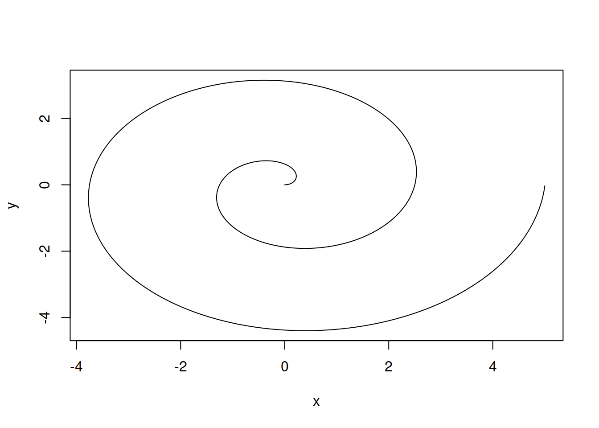
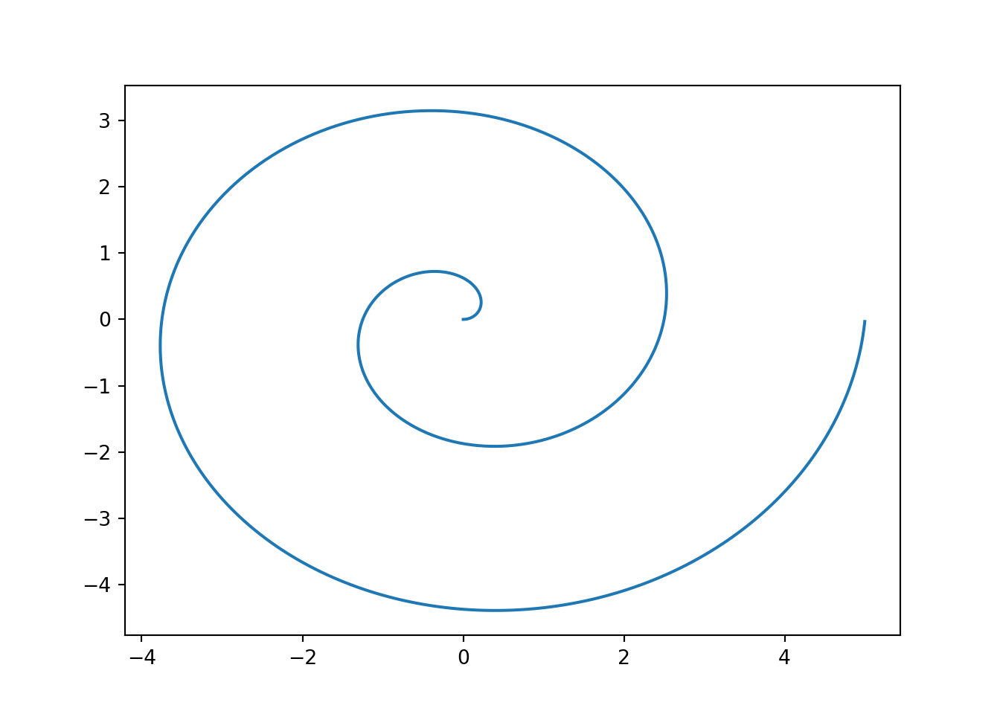
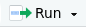

In this class, we’ll be using markdown notebooks to keep our code and notes in the same place. One of the advantages of both R and Python is that they are both scripting languages, but they can be used within notebooks as well. This means that you can have an R script file or a python script file, and you can run that file, but you can also create a document (like the one you’re reading now) that has code AND text together in one place. This is called literate programming and it is a very useful workflow both when you are learning programming and when you are working as an analyst and presenting results.
2.1 Scripts
Before I show you how to use literate programming, let’s look at what it replaces: scripts. Scripts are files of code that are meant to be run on their own. They may produce results, or format data and save it somewhere, or scrape data from the web – scripts can do just about anything.
Scripts can even have documentation within the file, using # characters (at least, in R and python) at the beginning of a line. # indicates a comment – that is, that the line does not contain code and should be ignored by the computer when the program is run. Comments are incredibly useful to help humans understand what the code does and why it does it.
This code will use concepts we have not yet introduced - feel free to tinker with it if you want, but know that you’re not responsible for being able to write this code yet. You just need to read it and get a sense for what it does. I have heavily commented it to help with this process.
# Define the angle of the spiral (polar coords)# go around two full times (2*pi = one revolution)theta<-seq(0, 4*pi, .01)# Define the distance from the origin of the spiral# Needs to have the same length as thetar<-seq(0, 5, length.out =length(theta))# Now define x and y in cartesian coordinatesx<-r*cos(theta)y<-r*sin(theta)plot(x, y, type ="l")

Figure 2.1: A Cartesian Spiral in R
I have saved this script here. You can download it and open it up in RStudio (File -> Open -> Navigate to file location).
import numpy as npimport matplotlib.pyplot as plt# Define the angle of the spiral (polar coords)# go around two full times (2*pi = one revolution)theta = np.arange(0, 4* np.pi, 0.01)# Define the distance from the origin of the spiral# Needs to have the same length as theta # (get length of theta with theta.size, # and then divide 5 by that to get the increment)r = np.arange(0, 5, 5/theta.size)# Now define x and y in cartesian coordinatesx = r * np.cos(theta)y = r * np.sin(theta)# Define the axesfig, ax = plt.subplots()# Plot the lineax.plot(x, y)plt.show()

Figure 2.2: A Cartesian Spiral in python
I have saved this script here. You can download it and open it up in RStudio (File -> Open -> Navigate to file location).
Scripts can be run in Rstudio by clicking the Run button  at the top of the editor window when the script is open.
2.1.2 Try it out!
Download the R and python scripts in the above example, open them in RStudio, and run each script using the Run button. What do you see?
2.2 Notebooks
Notebooks are an implementation of literate programming. Both R and python have native notebooks that are cross-platform and allow you to code in R or python. This book is written using Quarto markdown, which is an extension of Rmarkdown, but it is also possible to use jupyter notebooks to write R code.
In this class, we’re going to use Quarto/R markdown, because it is a much better tool for creating polished reports than Jupyter (in my opinion). This matters because the goal is that you learn something useful for your own coding and then you can easily apply it when you go to work as an analyst somewhere to produce impressive documents. Jupyter notebooks are great for interactive coding, but aren’t so wonderful for producing polished results. They also don’t allow you to switch between languages mid-notebook, and since I’m trying to teach this class in both R and python, I want you to have both languages available.
There are some excellent opinions surrounding the use of notebooks in data analysis:
The First Notebook War by Yihui Xie (response to Joel’s talk).
Yihui Xie is the person responsible for knitr and Rmarkdown.
Notes:
Show code R file, code python file, R notebook file, and jupyter notebook file that do similar things. Then show a quarto notebook file that runs the R and python chunks together in a single document.